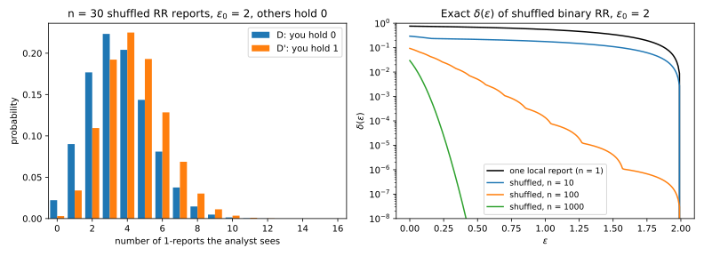
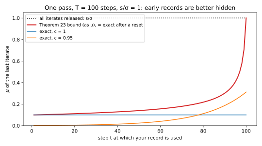

33 Amplification by shuffling and by iteration
33.1 Why this matters
Amplification by subsampling showed that uncertainty is worth privacy: if an adversary cannot tell whether a step used your record, the step leaks far less than its noise alone suggests. Two other kinds matter in practice. In the shuffle model, \(n\) users randomize their own data and a trusted shuffler strips identities and mixes the order, so the analyst does not know which report is yours. Each report alone satisfies local differential privacy (DP) at a level \(\varepsilon_0\), usually large to keep reports useful, yet the bag of reports is central DP with an \(\varepsilon\) that falls like \(1/\sqrt n\). And when noisy gradient descent (GD) on a convex loss releases only its final model, the adversary does not see what happened inside training: later steps add fresh noise and pull the parameters together, hiding early records better than composition says.
One idea gives every result. Show that what the adversary sees can be generated from a much simpler pair of distributions by a procedure that does not depend on your record. Anything the adversary learns from the real output, it could then have learned from the simple pair, so that pair’s privacy carries over. For shuffling the simple pair is a pair of counts; for iteration, a pair of Gaussians. Throughout, neighbouring datasets differ by replacing one record. The shuffling results are about anonymous, locally randomized reports, not the shuffle-and-partition batching used to train models in the central model, where no comparable theorem applies (Amplification by subsampling).
33.2 Shuffled randomized response, exactly
Start with the simplest randomizer, whose exact answer is the yardstick for every general bound. Each user reports a bit with binary randomized response: the true bit with probability \(\theta = e^{\varepsilon_0}/(1 + e^{\varepsilon_0})\), the flipped bit otherwise. Once the order is gone, a bag of bits can tell the analyst only how many of them are 1. Your report moves that count by at most one, while the other users’ random flips spread it over a range of about \(\sqrt{n\theta(1 - \theta)}\), and that spread is what hides you.
Let your bit be 0 in \(D\) and 1 in \(D'\), and let the others all hold 0, so their number of 1-reports is binomial, \(\mathrm{Bin}(n - 1, 1 - \theta)\), with probability mass function \(b\). A count of \(y\) arises either when your report is 0 and the others sent \(y\) ones, or when your report is 1 and they sent \(y - 1\), so \[P(y) = \theta\,b(y) + (1 - \theta)\,b(y - 1), \qquad Q(y) = (1 - \theta)\,b(y) + \theta\,b(y - 1). \tag{33.1}\] The exact \(\delta(\varepsilon)\) is the larger of the two hockey-stick divergences between \(P\) and \(Q\), one per order, which takes milliseconds to compute (Section 33.6). Strictly, this is exact for the case where all the others hold 0 and a lower bound on the worst case; the other configurations the full edition scans come within \(10^{-4}\) of it, so the book treats it as exact.
Why \(1/\sqrt n\)? The count is a sum of many independent bits, so it is nearly normal. Your report shifts its mean by \(2\theta - 1\), and its standard deviation is \(\sqrt{n\theta(1 - \theta)}\) under both datasets. A pair of normals is a Gaussian mechanism whose \(\mu\) is the shift divided by the standard deviation, and simplifying gives \[\mu \approx \frac{2\sinh(\varepsilon_0/2)}{\sqrt n}. \tag{33.2}\] More users mean more noise to hide one bit in, hence \(1/\sqrt n\); a larger \(\varepsilon_0\) means more faithful reports and a less noisy count, hence the growth like \(e^{\varepsilon_0/2}\). A company that asks 10,000 users whether they used a feature, with \(\varepsilon_0 = 2\), gets reports that are each the truth with probability 0.8808, a weak local guarantee; the shuffled bag is \((0.0870, 10^{-6})\)-DP.

Shuffling never improves pure DP, as the count of zero shows. If nobody reports a 1, you most likely hold 0, and the likelihood ratio of that outcome is \(e^{\varepsilon_0}\) whatever \(n\) is. What shuffling changes is how often it happens: rarely, for large \(n\). So amplification moves the bad outcomes into \(\delta\) (Figure 33.1), and a shuffled guarantee always needs \(\delta > 0\). The normal approximation fails for the same reason it works: it needs many 1-reports to hide among. At \(n = 1000\) and \(\varepsilon_0 = 4\) the others send about 18 on average, the count is far from normal, and the approximation gives 0.9667 against the exact 1.6910.
33.3 The clone bound for any local randomizer
Users often send histograms or noisy vectors, so you need a bound for every \(\varepsilon_0\)-DP local randomizer. The argument of Feldman, McMillan & Talwar (2021) finds a hidden randomized response inside any of them. Being \(\varepsilon_0\)-DP means no output is more than \(e^{\varepsilon_0}\) times likelier for one input than for another. Read the other way, any user’s report keeps at least a fraction \(e^{-\varepsilon_0}\) of each output’s probability under your \(D\)-version, and likewise under your \(D'\)-version. So every other user’s report can be generated by a coin: with probability \(e^{-\varepsilon_0}\) it is a clone, a draw distributed exactly like your report could be, half the time like your \(D\)-version and half like your \(D'\)-version; otherwise it is a draw that depends only on that user’s own data.
After shuffling, nobody can tell a clone from your report, so the adversary can do no better than count how many reports look like each version of you. That count is the simple pair, and its exact \(\delta(\varepsilon)\) is the numeric clone bound, valid for every \(\varepsilon_0\)-DP randomizer, even adaptively chosen ones. The clones supply the noise: about \(ne^{-\varepsilon_0}\) of them, whose split between the two versions has standard deviation \(\sqrt{ne^{-\varepsilon_0}}/2\). That again gives \(1/\sqrt n\) with a constant growing like \(e^{\varepsilon_0/2}\). The analytic form (their Theorem 3.1) bounds the count pair with Chernoff bounds: \[\varepsilon \le \ln\left(1 + \frac{e^{\varepsilon_0} - 1}{e^{\varepsilon_0} + 1}\left(\frac{8\sqrt{e^{\varepsilon_0}\ln(4/\delta)}}{\sqrt n} + \frac{8e^{\varepsilon_0}}{n}\right)\right), \qquad\text{valid when } \varepsilon_0 \le \ln\frac{n}{16\ln(2/\delta)}. \tag{33.3}\] The condition says there must be enough clones to hide among: it is \(ne^{-\varepsilon_0} \ge 16\ln(2/\delta)\). At \(\delta = 10^{-6}\) it caps \(\varepsilon_0\) at 1.460 for \(n = 1000\) and 6.066 for \(n = 10^5\).
| \(n\) | \(\varepsilon_0\) | Exact, binary randomized response | Normal approx., Equation 33.2 | Clones, numeric | Clones, closed form |
|---|---|---|---|---|---|
| 1,000 | 1 | 0.1266 | 0.1212 | 0.1824 | 0.5662 |
| 1,000 | 2 | 0.3233 | 0.2890 | 0.5455 | n/a |
| 1,000 | 4 | 1.6910 | 0.9667 | 3.9900 | n/a |
| 10,000 | 1 | 0.0357 | 0.0352 | 0.0530 | 0.2140 |
| 10,000 | 2 | 0.0870 | 0.0844 | 0.1550 | 0.5009 |
| 10,000 | 4 | 0.3146 | 0.2816 | 0.6009 | n/a |
| 100,000 | 1 | 0.0101 | 0.0101 | 0.0153 | 0.0726 |
| 100,000 | 2 | 0.0247 | 0.0244 | 0.0450 | 0.1862 |
| 100,000 | 4 | 0.0847 | 0.0822 | 0.1698 | 0.5346 |
Table 33.1 shows the cost of generality. The numeric clone bound is 1.44 to 2.36 times the exact value for randomized response, for a clear reason: in randomized response every other report is a bit that could be yours, while the clone argument counts only the \(e^{-\varepsilon_0}\) fraction guaranteed to look like yours. No general bound can beat the exact column, since randomized response is one of the randomizers it must cover. The closed form loses another factor of 3.10 to 4.75 to its Chernoff constants, so use it for scaling and the numeric bound to deploy.
The choice can decide whether a deployment is feasible. To collect a bit from \(10^5\) users with central \(\varepsilon \le 0.2\) at \(\delta = 10^{-6}\), the closed form allows \(\varepsilon_0 = 2\) (0.1862), the numeric clone bound allows \(\varepsilon_0 = 4\) (0.1698), and the exact value at \(\varepsilon_0 = 4\) is 0.0847. At \(\varepsilon_0 = 4\) the noise adds only \(0.0190/n\) to the variance of the estimated proportion, against up to \(0.25/n\) from sampling alone. All of this rests on a uniformly random order the analyst cannot see: if the order leaks, the analyst knows which report is yours and the guarantee falls back to \(\varepsilon_0\).
33.4 Amplification by iteration
Projected noisy stochastic gradient descent (SGD) makes one pass over the data, using record \(x_t\) at step \(t\). If every iterate is released, \(x_t\) is protected only by the noise of its own step. If only the final model is released, the noise of every later step also covers it, and Feldman, Mironov, Talwar & Thakurta (2018) turned this into a guarantee.
The step that uses your record pushes the two runs apart. Each later noisy step can “pay off” part of that gap, and the price of paying an amount \(a\) is quadratic in \(a\), like the Rényi divergence of two Gaussians shifted by \(a\). Paying a gap \(s\) in \(m\) equal instalments costs \(m(s/m)^2 = s^2/m\), so spreading the payment over every remaining step is cheapest. This only works if the later steps never push points apart, if they are contractions; a gradient step on a convex, \(\beta\)-smooth loss with step size \(\eta \le 2/\beta\), followed by projection onto a convex set, is one. For convex, Lipschitz, smooth losses and noise multiplier \(\tilde\sigma\) (noise per unit of the gradient’s replace-one sensitivity), releasing only the last iterate gives the record used at step \(t\) of \(n\) the Rényi differential privacy (RDP) curve \[\varepsilon_t(\alpha) = \frac{\alpha}{2\tilde\sigma^2}\cdot\frac{1}{n - t + 1}: \tag{33.4}\] one Gaussian step’s curve divided by the number of noisy steps from \(t\) to the end.
Take one pass over \(n = 10{,}000\) records with \(\tilde\sigma = 1\), converted to \((\varepsilon, 10^{-5})\) (Rényi DP). The first record gets \(\varepsilon = 0.0481\), the one in the middle 0.0707, and the one used 100 steps before the end 0.4849. The last record gets 5.2985, exactly what it would get if every iterate were released: no later step pays anything for it.

So a report must state the worst record’s value, which gets no amplification at all; randomizing the stopping time spreads the benefit across records. The bound is exact in the worst case, when the step that uses your record wipes out all earlier noise, and loose for typical runs, where earlier noise and strict contraction also help (Figure 33.2). It covers one pass in a fixed order; several passes or subsampling need other theorems (Altschuler & Talwar 2022). And it needs convexity, because a non-contractive step can stretch a small gap faster than the noise pays it off.
33.6 Code
This standard-library snippet builds Equation 33.1 in log space, takes the larger hockey-stick divergence over both directions, and bisects for \(\varepsilon\):
from math import exp, lgamma, log
def log_binom_pmf(k: int, n: int, p: float) -> float:
return lgamma(n + 1) - lgamma(k + 1) - lgamma(n - k + 1) + k * log(p) + (n - k) * log(1 - p)
def shuffled_rr_pair(n: int, eps0: float) -> tuple[list[float], list[float]]:
"""Distribution of the number of 1-reports when you hold 0 (P) or 1 (Q); the n - 1 others hold 0."""
theta = exp(eps0) / (1 + exp(eps0))
b = [exp(log_binom_pmf(y, n - 1, 1 - theta)) for y in range(n)] + [0.0]
P = [theta * b[y] + (1 - theta) * (b[y - 1] if y else 0.0) for y in range(n + 1)]
Q = [(1 - theta) * b[y] + theta * (b[y - 1] if y else 0.0) for y in range(n + 1)]
return P, Q
def hockey_stick(P: list[float], Q: list[float], eps: float) -> float:
return sum(max(p - exp(eps) * q, 0.0) for p, q in zip(P, Q))
def shuffled_rr_epsilon(n: int, eps0: float, delta: float) -> float:
P, Q = shuffled_rr_pair(n, eps0)
lo, hi = 0.0, eps0 # shuffling never does worse than the local eps0
for _ in range(50):
mid = (lo + hi) / 2
worst = max(hockey_stick(P, Q, mid), hockey_stick(Q, P, mid))
lo, hi = (mid, hi) if worst > delta else (lo, mid)
return hi
print(f"{shuffled_rr_epsilon(10_000, 2.0, 1e-6):.4f}") # 0.0870
print(f"{shuffled_rr_epsilon(100_000, 4.0, 1e-6):.4f}") # 0.0847
print(f"{shuffled_rr_epsilon(1_000, 4.0, 1e-6):.4f}") # 1.6910It reproduces the exact column of Table 33.1. The full edition’s script, shuffling_iteration.py, also computes the numeric clone bound and every iteration result:
uv run python code/part04-privacy-accounting/shuffling_iteration.py33.7 Cheat sheet
| Result | Statement | Use |
|---|---|---|
| Shuffled binary randomized response | Count pair Equation 33.1; \(\mu \approx 2\sinh(\varepsilon_0/2)/\sqrt n\) | Compute exactly; the approximation fails with few 1-reports |
| Numeric clone bound | Exact \(\delta(\varepsilon)\) of the clone count pair | Deploy with it for any \(\varepsilon_0\)-DP randomizer; 1.44–2.36 times the exact value for randomized response |
| Closed-form clone bound | Equation 33.3, needs \(\varepsilon_0 \le \ln\frac{n}{16\ln(2/\delta)}\) | Scaling only; 3.10–4.75 times the numeric bound |
| One-pass noisy SGD, last iterate | \(\varepsilon_t(\alpha) = \frac{\alpha}{2\tilde\sigma^2(n - t + 1)}\) | Convex, smooth losses; report the last record’s value |
| Bounded domain or strong convexity | RDP of the last iterate plateaus; quadratic limit \(\frac s\sigma\sqrt{\frac{1+c}{1-c}}\) | Convex training, last iterate only |
Rules of thumb
- Shuffling turns \(\varepsilon_0\)-local reports into a central \(\varepsilon\) that falls like \(1/\sqrt n\), but never lowers the pure-DP level.
- Amplification by iteration needs convex, smooth losses and a hidden state; the record used last gets none.
- Never claim hidden-state privacy for non-convex training or when checkpoints are released.
33.8 Further reading
- Feldman, McMillan & Talwar, “Hiding Among the Clones: A Simple and Nearly Optimal Analysis of Privacy Amplification by Shuffling” (FOCS 2021): the clone reduction and bound, and the numerical method to compute it.
- Feldman, Mironov, Talwar & Thakurta, “Privacy Amplification by Iteration” (FOCS 2018): the shifted Rényi divergence and the one-pass noisy SGD guarantee.
- Altschuler & Talwar, “Privacy of Noisy Stochastic Gradient Descent: More Iterations without More Privacy Loss” (NeurIPS 2022): the bounded-domain plateau, with a matching lower bound.
- Annamalai, “It’s Our Loss: No Privacy Amplification for Hidden State DP-SGD With Non-Convex Loss” (AISec 2024): why the hidden-state results do not extend to deep learning.
Derivations. Every result in this chapter is derived step by step in the full edition’s chapter.